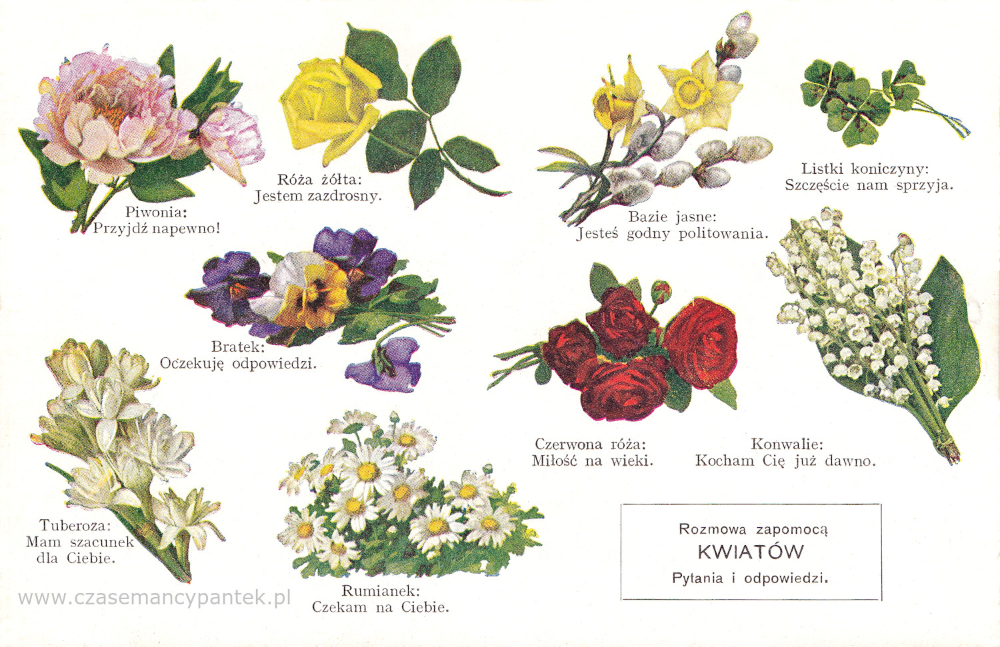
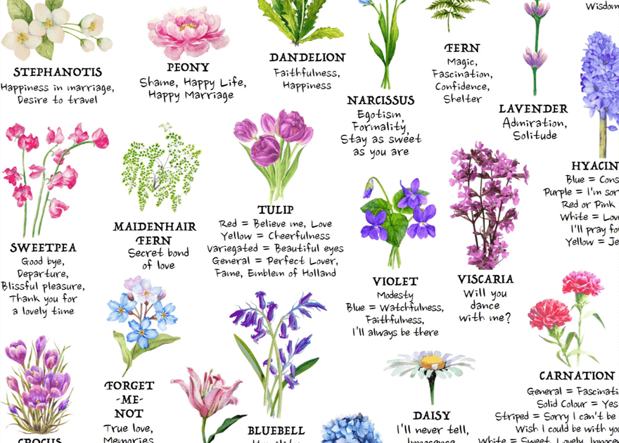
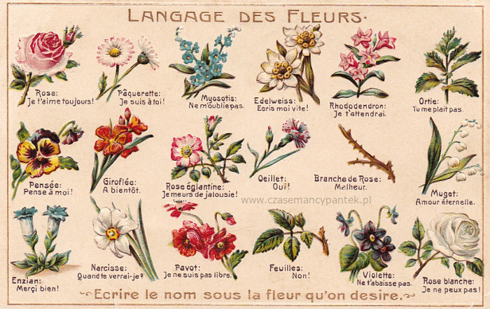
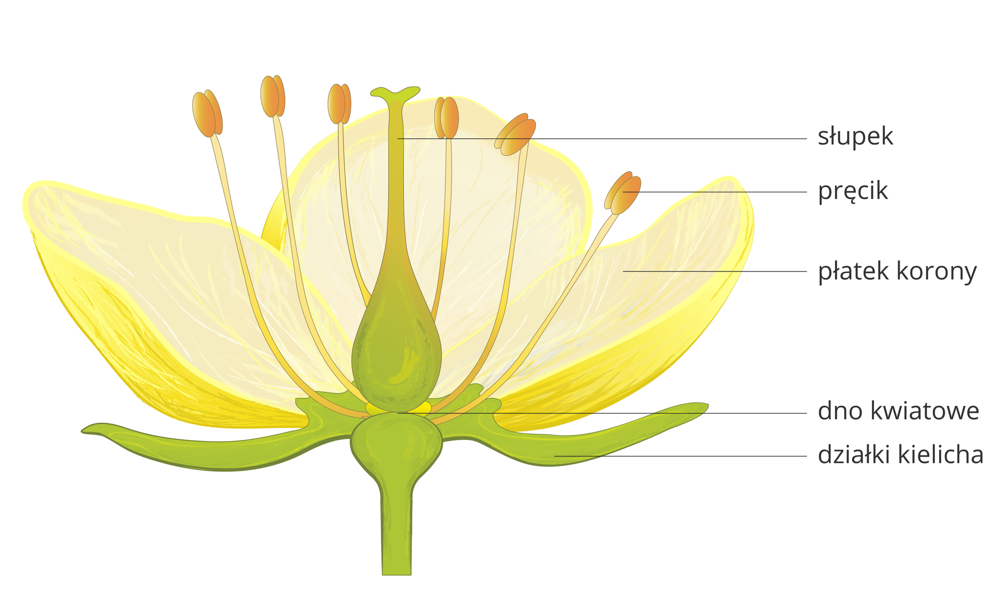
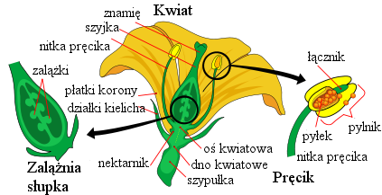
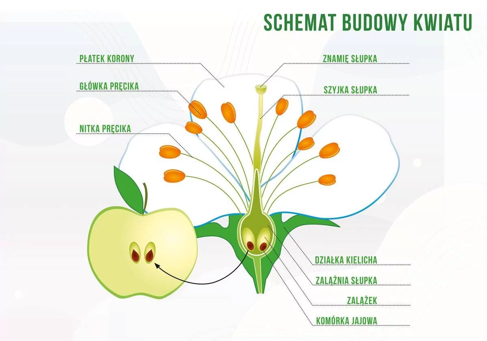

Kwiaty rozwijają się z pączków kwiatowych, zwykle jako pędy boczne w pachwinie przysadek (liści przykwiatowych, wspierających). Rzadko kwiat rozwija się na szczycie pędu. Rośliny o takim usytuowaniu tych organów nazywane są jednoosiowymi (haplokaulicznymi). Kwiat może być szypułkowy (umieszczony na różnej długości szypułce) lub siedzący (osadzony bezpośrednio na osi pędu). Kwiaty wyrastają zwykle w szczytowych, a więc najmłodszych częściach pędu, rzadko pojawiają się na wieloletnich fragmentach pędów (np. pniach i konarach drzew). Takie wyjątkowe usytuowanie kwiatów występuje u niektórych roślin tropikalnych i określane jest mianem kauliflorii. Pojedynczy kwiat zbudowany jest z liści płodnych i płonnych, nie związanych bezpośrednio z rozmnażaniem. Części płodne to pręciki z woreczkami pyłkowymi (mikrosporofile – organy męskie) oraz owocolistki z zalążkami (makrosporofile – organy żeńskie). Pręciki produkujące pyłek tworzą pręcikowie. Owocolistki tworzą słupek (słupkowie). Z liści płonnych (sterylnych) kwiatu zbudowany jest okwiat (okrywa kwiatowa), która u roślin nagonasiennych jest bardzo niepozorna, a niejednokrotnie nie występuje wcale, u roślin okrytozalążkowych zaś jest różnorodna i czasami bardzo okazała. Okwiat może być pojedynczy (listki okwiatu zebrane w jednym lub dwóch okółkach są niezróżnicowane) lub złożony i wtedy w jego skład wchodzi korona (corolla) oraz kielich (calyx), u niektórych roślin pod kielichem występuje kieliszek (epicalyx). Wszystkie elementy składowe kwiatu wyrastają z dna kwiatowego – rozszerzonej części będącej zakończeniem szypułki. W kwiatach owadopylnych występują dodatkowo gruczoły zwane miodnikami. W przypadku roślin nagonasiennych nieosłonięte zalążki leżą na pojedynczych owocolistkach. Zaś u roślin okrytonasiennych jeden lub kilka zrośniętych owocolistków tworzy słupek, w jego dolnej części tworzącej zalążnię zamknięte są zalążki.



Świat roślin kwitnących zachwyca. Obejmuje on ogromną różnorodność form i barw. Każdy gatunek posiada unikalną nazwę botaniczną. Zrozumienie kwiatów i ich nazwy jest kluczowe. Ułatwia to identyfikację oraz pielęgnację. Istnieje ponad 250 000 znanych gatunków roślin kwitnących. Na przykład, róża symbolizuje miłość. Storczyk urzeka swoją egzotyczną urodą. Identyfikacja jest pierwszym krokiem do pełnego zrozumienia rośliny. Każdy kwiat musi posiadać unikalną nazwę botaniczną. To zapewnia precyzję w komunikacji. Gatunek-posiada-nazwę łacińską, co jest fundamentem botaniki. Botanika-klasyfikuje-rośliny według ściśle określonych zasad. Systematyka Linneusza stanowi jej podstawę. Dzieli on rośliny na rodzaj i gatunek. Łacińskie nazwy kwiatów są uniwersalnym językiem. Pozwalają one na globalną komunikację naukową. Botanicy powinni przestrzegać tej nomenklatury. To zapobiega nieporozumieniom. Nazwa Rosa canina jednoznacznie identyfikuje dziką różę. Inne kategorie taksonomiczne to rodzina, rząd oraz klasa. Poznanie tych nazw przynosi wiele korzyści. Ułatwia to badania oraz wymianę informacji. Precyzja naukowa jest tutaj kluczowa. Rośliny kwitnące dzielimy na kilka podstawowych typów. Są to jednoroczne, dwuletnie i wieloletnie. Typ jednoroczny kończy cykl życia w jednym sezonie. Petunia to doskonały przykład rośliny jednorocznej. Typ dwuletni kwitnie w drugim roku uprawy. Kwiat-charakteryzuje-kształt oraz cykl życia. Rośliny wieloletnie kwitną przez wiele lat. Tulipan jest przykładem pięknej byliny. Dlatego poznawanie wszystkich rodzajów kwiatów jest ważne. Niektóre gatunki mogą zmieniać swoje cechy. Zależy to od środowiska. Zmienność morfologiczna jest powszechna wśród roślin
Świat roślin kwitnących zachwyca. Obejmuje on ogromną różnorodność form i barw. Każdy gatunek posiada unikalną nazwę botaniczną. Zrozumienie kwiatów i ich nazwy jest kluczowe. Ułatwia to identyfikację oraz pielęgnację. Istnieje ponad 250 000 znanych gatunków roślin kwitnących. Na przykład, róża symbolizuje miłość. Storczyk urzeka swoją egzotyczną urodą. Identyfikacja jest pierwszym krokiem do pełnego zrozumienia rośliny. Każdy kwiat musi posiadać unikalną nazwę botaniczną. To zapewnia precyzję w komunikacji. Gatunek-posiada-nazwę łacińską, co jest fundamentem botaniki. Botanika-klasyfikuje-rośliny według ściśle określonych zasad. Systematyka Linneusza stanowi jej podstawę. Dzieli on rośliny na rodzaj i gatunek. Łacińskie nazwy kwiatów są uniwersalnym językiem. Pozwalają one na globalną komunikację naukową. Botanicy powinni przestrzegać tej nomenklatury. To zapobiega nieporozumieniom. Nazwa Rosa canina jednoznacznie identyfikuje dziką różę. Inne kategorie taksonomiczne to rodzina, rząd oraz klasa. Poznanie tych nazw przynosi wiele korzyści. Ułatwia to badania oraz wymianę informacji. Precyzja naukowa jest tutaj kluczowa. Rośliny kwitnące dzielimy na kilka podstawowych typów. Są to jednoroczne, dwuletnie i wieloletnie. Typ jednoroczny kończy cykl życia w jednym sezonie. Petunia to doskonały przykład rośliny jednorocznej. Typ dwuletni kwitnie w drugim roku uprawy. Kwiat-charakteryzuje-kształt oraz cykl życia. Rośliny wieloletnie kwitną przez wiele lat. Tulipan jest przykładem pięknej byliny. Dlatego poznawanie wszystkich rodzajów kwiatów jest ważne. Niektóre gatunki mogą zmieniać swoje cechy. Zależy to od środowiska. Zmienność morfologiczna jest powszechna wśród roślin


